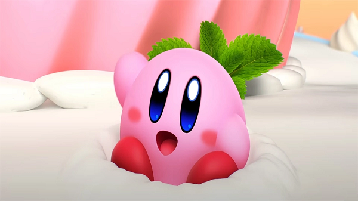
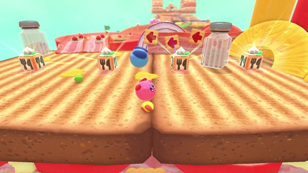
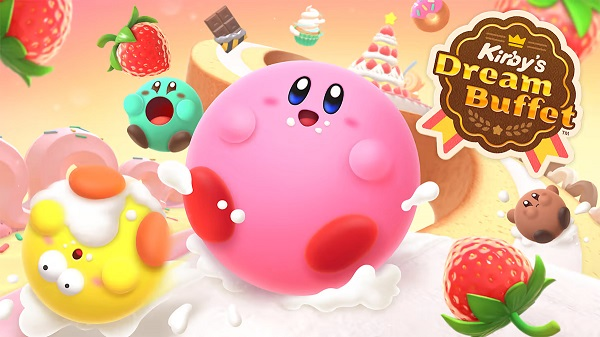
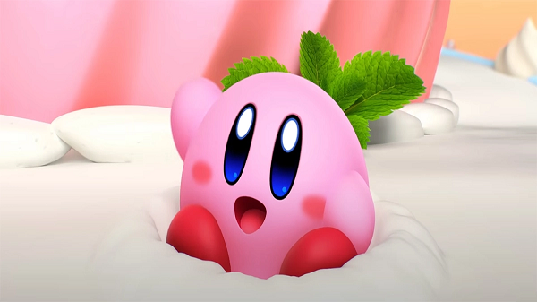
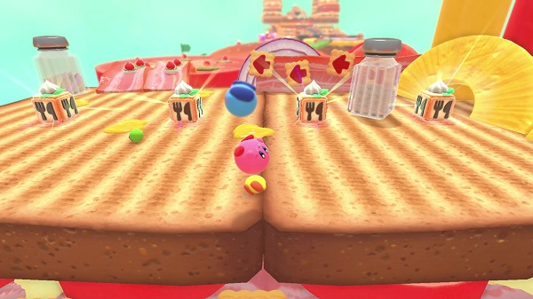
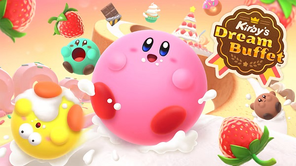

Bienvenido al mundo de Kirby
Bienvenido al mundo de Kirby
Kirby’s Dream Buffet™
Rueda a través de un banquete de etapas con temática culinaria en 4 divertidas rondas de 4 jugadores* como Kirby, quien… ¿parece estar más redondo de lo normal? Compite a través de deliciosas carreras de obstáculos para recolectar fresas a medida que Kirby crece. Después, cambia tu suerte en la ronda final: un combate de frutas sobre una plataforma flotante. Rueda a través de deliciosas carreras de obstáculos en partidas para 4 jugadores Recoge fresas para crecer y prepararte para la batalla final.
En Kirby’s Dream Buffet, competirás en fases cremosas y crujientes mientras te enfrentas a otro jugador en la misma consola o contra una panda de hambrientos Kirbys de diversos colores en línea.
 




